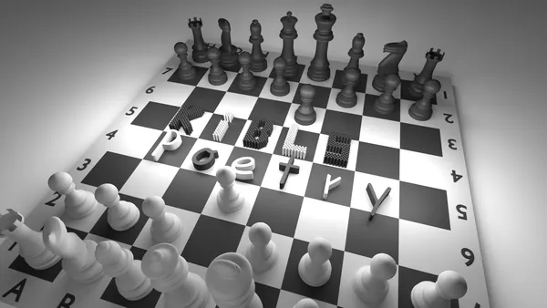

PROPHETIC
POETIC
PART 2
KiBLS Poetry
E-Book Number 14
1
Table of contents
The end
3
Dawn of a new era
4
A lightful journey
5
Peaceful wanderings
6
Signs in "modern clouds"
7
The dark night of all souls
9
The mark of the beast V.2
11
A final choice
13
We form the unit
15
2
The end
The words "come" will fall.
Then there will be a real bang.
The great mass has awakened.
The last fire has kindled.
They break chains and the dungeon.
Free and unleashed; true berserkers.
Half mankind is crazy!
The great purification begins.
The masses will be united mentally.
The triumph appears at the horizon.
The last chapter becomes fulfilled,
and thus unveils a new paradise.
Author:
KiBLS
Written:
02.11.2019
Published:
~2019
3
Dawn of a new era
You have your own madness to climb!
You know that now this is the time!
You can read it in all the falling drops.
And sparrows whistle it from the rooftops.
A time that is long announced and awaited.
A time that is long feared and also hated.
The awakening of all hearts.
The inner revolution starts.
Be joyful and just start singing!
The Liberty Bell is finally ringing!
Author:
KiBLS
Written:
12.02.2019
Published:
29.02.2020
4
A lightful journey
Many lights are starting to glow.
Many people are starting to know.
All lights are getting brighter.
The whole reality act as igniter.
The wheel of fate is now spinning.
The end of times are soon beginning.
And the deception is right next door.
Be aware and start searching your core!
Something new will then been born.
It'll be more beautiful than any unicorn.
Like the caterpillar becomes a butterfly.
Your journey will create a new high.
Author:
KiBLS
Written:
16.04.2019
Published:
19.04.2020
5
Peaceful wanderings
Soon the time will come.
When the feet will drum.
Old chains just break.
And humanity will awake.
We all have to study and teach.
The truth is our common speech.
Wise men will finally travel.
Consciousness on a new level.
We're tracking the signs,
by creating sacred rhymes.
Author:
KiBLS
Written:
16.04.2019
Published:
19.04.2020
6
This time I would like to start with a little bible quote even though I am not a supporter of any religion (Quote from "Acts/Joel 2:17"):
>>>> Start of quote:
"No, this is what was spoken by the prophet Joel: In the last days, God says, I will pour out My Spirit on all people; your sons and daughters will prophesy, your young men will see visions, your old men will dream dreams. Even on My menservants and maidservants I will pour out My Spirit in those days, and they will prophesy."
>>>> End of quote.
Signs in "modern clouds"
They're just prophecies for the blind.
For the initiated, everything is aligned.
Even the most sacred idol fades away,
when your inner voice starts to pray.
➛
7
Signs in "modern clouds"
It works like an earwig in your head,
and suddenly you'll see the living dead.
All this had been known for a long time,
and here I describe it again with a rhyme.
You are part of the whole and never separated!
Please recognize that this insight is awaited!
Matter and time are only an illusion!
I hope this clears up at least some confusion.
All mankind will be eternally connected!
Therefore, the big change is now expected!
And finally as brightly shining as a star,
you'll recognize who you really are.
Author:
KiBLS
Written:
05.03.2020
Published:
09.05.2020
8
The dark night of all souls
We are entering a delicate phase,
everywhere it begins hefty to blaze.
But we are still at the beginning!
It's the start of the time of sinning.
Resist all the vices before your eyes.
And do not trust all the cheap lies!
The fight will rage for a long time.
It'll be fought until the last dime.
Money will definitively lose its power.
This will be the dawn of the holy hour.
➛
9
The dark night of all souls
When everyone is utterly desperate.
We'll have fulfilled our needed fate.
Then the world will blossom anew.
And the sky will again turn dark blue.
Author:
KiBLS
Written:
06.11.2019
Published:
15.11.2020
10
I start again with a little Bible quote and I want to emphasise again that I do not support any religion.
>>> Start of the quote (Revelation 13:17):
"And the second beast required all people small and great, rich and poor, free and slave, to receive a mark on their right hand or on their forehead, so that no one could buy or sell unless he had the mark— the name of the beast or the number of its name. Here is a call for wisdom: Let the one who has insight calculate the number of the beast, for it is the number of a man, and that number is 666."
>>> End of the quote
The mark of the beast V.2
For those who don't yet know what's going on.
For the times to come, you have to be strong.
Changed from the front of the head to the forehead.
It's only one forgery that has become widespread.
➛
11
The mark of the beast V.2
You can't buy or sell anything anymore.
Without selling to the beast as a whore.
The madness is taken to the extreme.
It's the realisation of an evil dream.
The bio sensor is placed on the right hand.
For a long time, this was ruthlessly planned!
Genetically modified, you are no longer human.
To artificial intelligence, you become a crewman.
Free yourself from the grip of darkness.
For this you'll need a lot of smartness.
Detoxify your body and your mind!
And it will be freedom that you find.
Author:
KiBLS
Written:
31.03.2020
Published:
29.01.2021
12
A final choice
The time of the rapture is approaching.
I'll soon be ready for my master coaching.
At the same time, the persecution begins.
And many people will succumb to their sins.
Everything was long predicted and described.
For a short time, an evil order will be applied.
It'll not become an easy time for a dissident.
Because the global genocide is imminent.
Still unimaginable for most of the population.
But "the beast" will rage in every nation.
➛
13
A final choice
He who does not submit to evil is blessed.
For the good is still beating in his breast.
And those who love truth and know it.
These write a new future and compose it.
Author:
KiBLS
Written:
10.01.2021
Published:
19.01.2021
14
We form the unit
The coming times will be quite rough,
but for all of us it will be very tough.
But you must never lose sight of the goal.
Because we all work together on the whole.
Many will not endure these hard times.
Because it'll happen incredible crimes.
But we continue to pull in the same direction.
We'll never accept any kind of subjection!
We are the ones who came to stay!
We'll continue steadfastly on our way!
We have recognised ourselves and desire unity.
We're acting as natural and sacred community.
Author:
KiBLS
Written:
21.10.2020
Published:
30.10.2020
15
16
Prev Book
-
Next Book
Start
-
Download
-
Change Layout